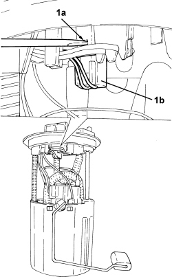
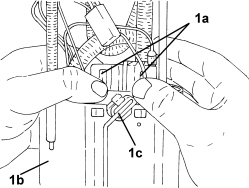

1040A66 FUEL LEVEL GAUGE FOR SUBMERGED PUMP ASSEMBLY - REPLACE.
- Path
- Procedures > 10 ENGINE > 1040 FUEL TANK AND PIPES > 1040A FUEL TANK AND COMPONENTS > 1040A66 FUEL LEVEL GAUGE FOR SUBMERGED PUMP ASSEMBLY - REPLACE.
- Kind
- repair procedure (removal / refitting; the operation number is the code)
- Applies to
- all engines; all production periods
- Interactive page
- https://sloeber94.github.io/elrnDB-fCrm/en/#/194003026
Applies to: all engines; all production periods
 Removing
Removing
 Refitting
RefittingOp. 1040A70 SUBMERGED PUMP ASSEMBLY COMPLETE WITH LEVEL GAUGE CONTROL - R + R
1. Press the tab (1a) and disconnect the electrical connector (1b) for the sensor.

Applies to: all engines; all production periods
1. Press the sensor retaining tabs (1a) inwards, then lift it up and remove it from the pump drip tray (1b) complete with float (1c).

Applies to: all engines; all production periods
Refitting
Removing- Position the sensor, complete with float in its housing and secure it to the pump drip tray using the retaining clips.
- Connect the electrical connector for the sensor.
- Check that the float moves correctly.
Op. 1040A70 SUBMERGED PUMP ASSEMBLY COMPLETE WITH LEVEL GAUGE CONTROL - R + R